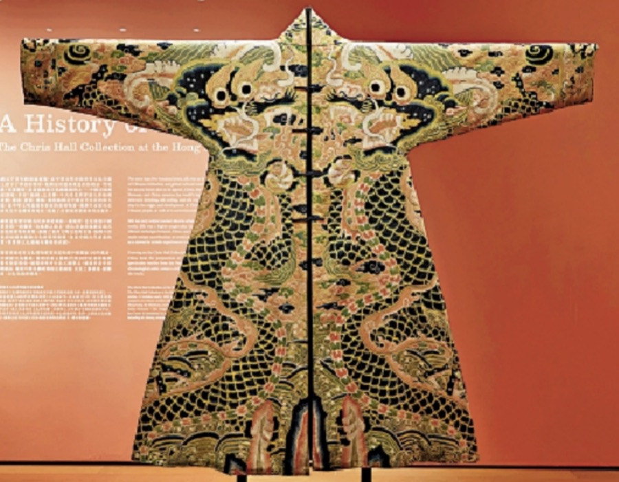
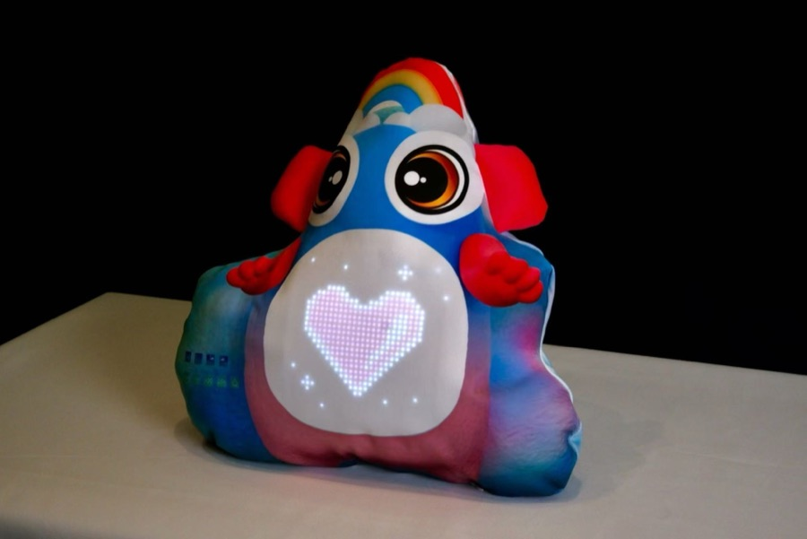
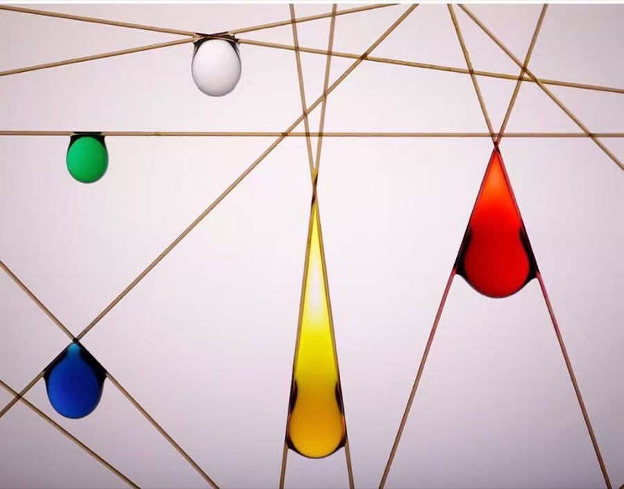
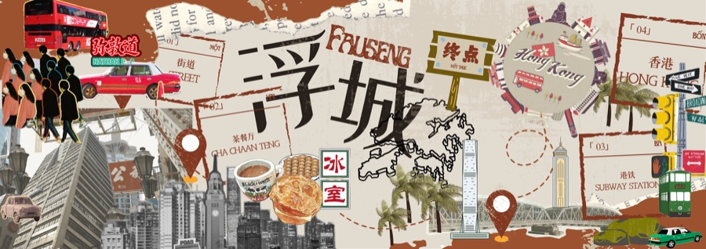
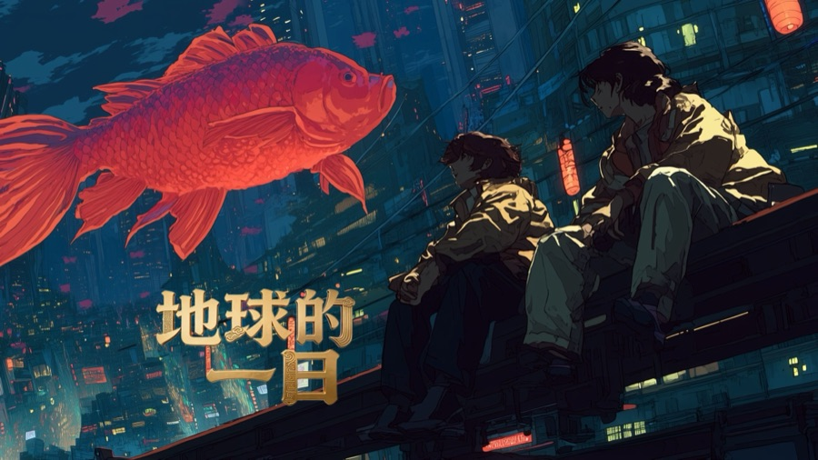
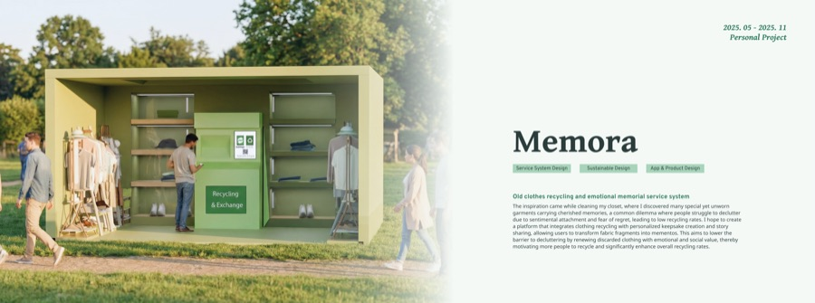
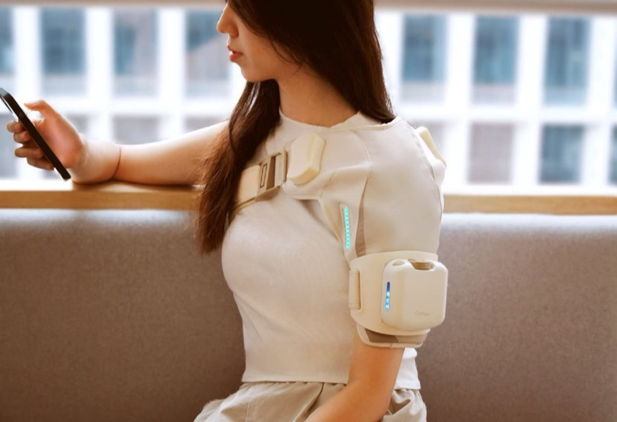

About Me
I am an undergraduate student in Fashion Innovation and Technology at The Hong Kong Polytechnic University. My research is rooted in Smart and Interactive Textiles, with a core focus on Wearable Technology and Human-Computer Interaction.
My research philosophy centers on grounding interaction in genuine sensory experience. I treat textiles and fibers — from magnetically actuated structures to conductive architectures — as the interface itself, extending interaction beyond vision into touch and other underexplored senses. Looking forward, my goal is to develop wearable systems that are intelligent, adaptive, and effortless to use — technology that disappears into daily life rather than demanding attention from it.
Outside research, I'm drawn to photography, design, and AI-assisted art-making. I'm currently applying for research-based Master's / PhD programs for Fall 2027.
Education
The Hong Kong Polytechnic University
B.A. in Fashion and Textile, Major in Fashion Innovation and Technology
CGPA: 3.68 / 4.30
Sep. 2023 - May 2027
Experience
University of Waterloo — Dept. of Mechanical and Mechatronics Engineering
Undergraduate Research Intern, Interdisciplinary Fluid Physics Lab
Advisor: Prof. Zhao Pan
May - Aug. 2026
The Hong Kong Polytechnic University — School of Fashion and Textiles
Undergraduate Researcher
Advisor: Prof. Junhong Pu
Mar. 2026 - Present
Code Create (AiDA AI Fashion Design)
Creative Marketing Freelancer
Aug. - Oct. 2025
HUFU (Shenzhen Institute of Scientific and Innovation)
Interaction Design Intern
Jul. - Aug. 2025
Mengma (Shenzhen Institute of Scientific and Innovation)
Product Design Intern
Jun. 2025
The Hong Kong Polytechnic University — Research Institute for Intelligent Wearable Systems
Student Research Assistant, Vincent and Lily Woo Endowed Professorship
Advisor: Prof. Xiaoming Tao
Sep. 2024 - Jun. 2025
Projects









Awards
Contact
Feel free to reach out — 23098742d@connect.polyu.hk